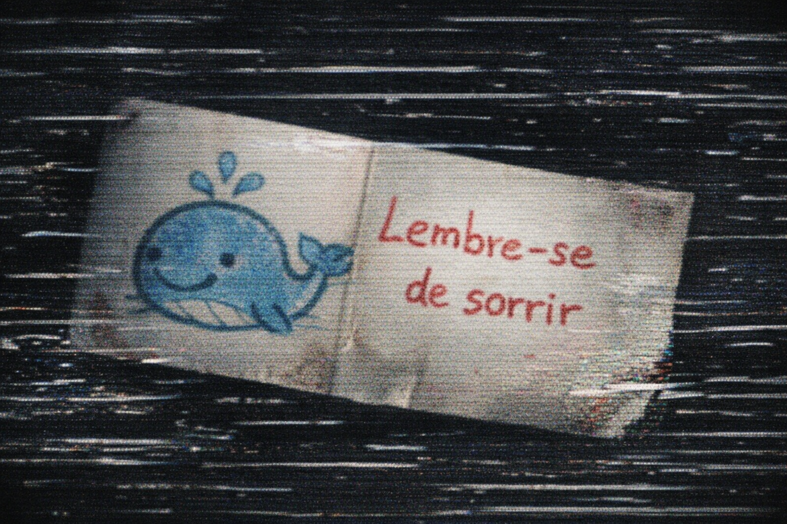

FRAGMENTO CORROMPIDO
Um bilhete dobrado com uma ilustração infantil de uma baleia e a frase "Lembre-se de sorrir". Pequenos sinais apontam para uma coleção de lembranças compartilhadas — desenhos, ingressos e pequenos presentes.

Bm0: Este tipo de arquivo não altera o fluxo principal, mas adiciona cor emocional ao relatório final.